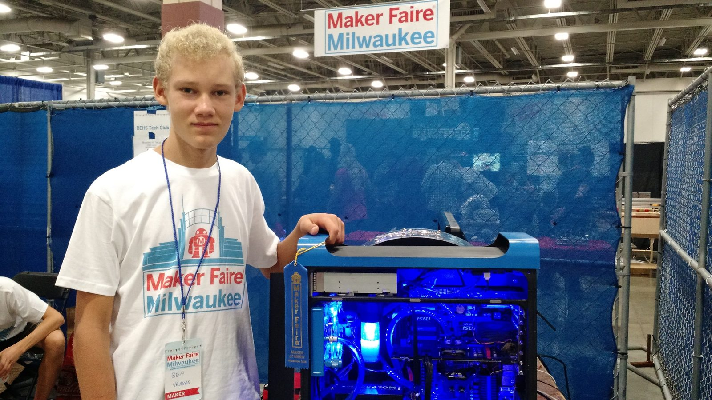

Where it started: a Vrakas Labs booth and 3D-modeling seminars at Maker Faire Milwaukee, a transparent water-cooled PC, high-power rockets and a DIY e-bike.
Maker Faire
Teaching
Laser cutting
Water cooling
High-power rocketry
E-bike

Maker Faire Milwaukee (2012–2016)
Vrakas Labs had a booth at Maker Faire Milwaukee every year from 2012 to 2016, showing printers, PCs and projects. I also gave public seminars on 3D modeling in Autodesk Inventor.
Clearwater was a custom PC: a fully transparent case with water cooling, built from 3D-printed joints and laser-cut acrylic panels. Its look later caught AMD's eye and led to the sponsored Carbon 3D chassis.
As co-captain, I led a regional-champion team in the Rockets for Schools program. We won first- and second-place awards at the Midwest launch competitions, designing and building payloads and fuselages for high-power rockets up to six feet tall.